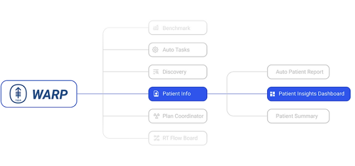
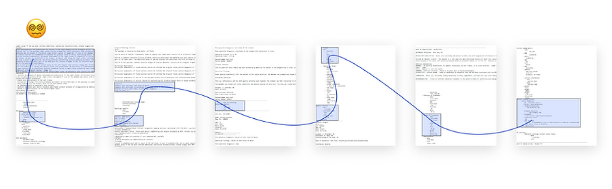
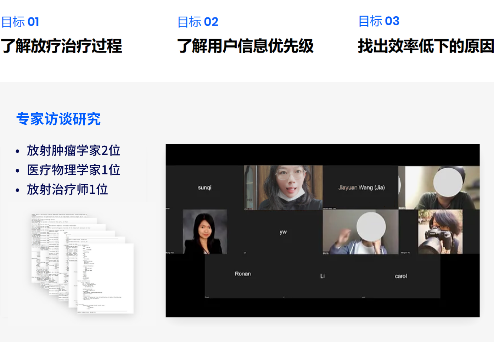
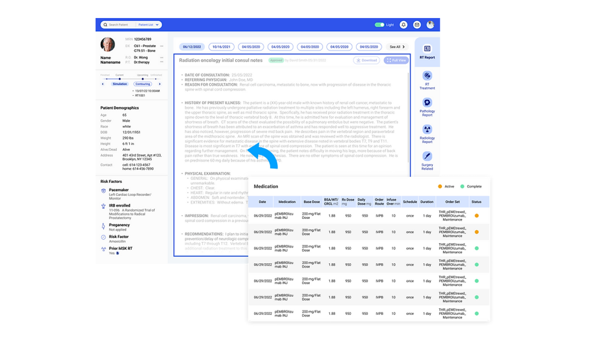

患者洞察信息系统
供肿瘤学家使用的内部电子病历患者洞察信息系统，以提高临床决策效率。
实习项目
·
B端信息系统设计
✍🏻关于项目
放射治疗（RT）的前期准备在很大程度上依赖于患者的数字档案。然而，医生通常在收集患者数据，阅读存储在不同系统中的报告上的时间，约为每位患者 30 分钟或更长时间。
在进行了调研以后，我们重新整理了信息层级与页面布局。最总，我们的设计得到了客户的高度评价，并将收集阅读单个患者信息的时间从30分钟下降到3分钟，帮助放射专家以 300% 的速度诊断和识别危险患者。
-
Timeline:
2023年冬季
Background
实习内容
My Role:
UX设计师
Tools:
Figma,Figjam
📊项目背景
成果：将一名患者的信息传达时间从30分钟减少到3分钟🚀
我们的客户是美国两大癌症护理医院之一： Memorial Sloan Kettering Cancer Center(MSK)。
作为实习生，我参与设计了其内部信息系统WARP系统，主要负责客户数据洞察系统相关页面。该系统地集成了患者的不同数字档案和纵向患者记录，帮助医生高效地查找和阅读患者的文档。

我们的三个主要用户的最终用户测试表明，收集信息和阅读单个患者报告的时间从30分钟下降到3分钟。 它大大减少了医疗团队的数据收集和汇总负担，
使临床决策能够根据患者数据做出。它帮助我们的放射专家以 300% 的速度诊断和识别危险患者。
📑设计挑战陈述
①放射治疗（RT）治疗的准备在很大程度上依赖于患者的数字档案。
一半的癌症患者将接受放射治疗（RT），该放射治疗使用复杂的算法和机器将高度精确的辐射传递到患者的目标区域。医生需要通过患者的档案来制定定制的治疗计划。
②RT治疗有三类利益相关者：肿瘤学家，物理学家和治疗师。
挑战：减少30分钟每人的信息传达时间
目前，他们通常花费在收集患者数据和阅读存储在不同系统中的报告上的时间约为每位患者 30 分钟或更长时间。

📈用户研究
根据设计挑战的目标，我明确了专家访谈的目的，并制定了访谈大纲。 
📈设计洞察
根据远程视频访谈，我们发现：
在RT处理过程中，三个利益相关者接力查看患者的不同文件并做出决定。
梳理了用户旅程后，我们得出了三个导致流程低效的关键问题：
1.无法快速查找和阅读所需患者的信息
2.历史文献杂乱无章，阅读起来不直观
3.难以在患者档案之间切换
📈信息架构
基于上述关键问题，我们重新梳理了信息结构。 我将原始数据转换为信息结构，并对每个部分进行评分，以确定哪些信息对各个用户都更有价值， 并据此重新设计页面结构。
📈概念探索
在此之后，我基于信息架构探索了信息系统的布局，最终进行了设计的聚焦。
🎨设计与迭代
随后，我们对当前和潜在用户进行了大量测试，以确保信息系统设计的可用性。 在具有不同工具经验的 MSK 专家的支持下，我们在此过程中对 10+ 多名用户进行了可用性测试。
🎨最终交付设计
问题1：
无法快速查找和阅读所需患者的信息
解决：导航栏
只需单击一下即可访问所需信息
问题2：
历史文献杂乱无章，阅读起来不直观
解决：纵向时间选项卡
在当前和历史患者的文档之间快速导航，通过将文档并排放置来创建更直观的信息检索。

问题3：
难以切换患者资料
解决：下拉患者列表
在不同患者的个人资料之间轻松切换并管理日常任务
亮点1：报告完整视图
改善医生在小型显示器上的沉浸式阅读体验

亮点2：黑暗模式
使信息系统在黑暗环境中更加友好
📈总结与反思
Next Step：
对不同用户的信息优先级, 进行排名和加权可以阐明哪些信息更需要显示。
定制需求将是下一步的探索方案，因为用户的信息优先级不是固定的，而是在不同的处理阶段相应地变化。
为用户提供更多的自由来管理布局和功能是另一种设计假设。
